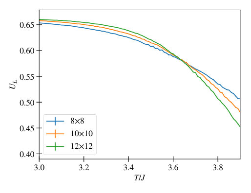

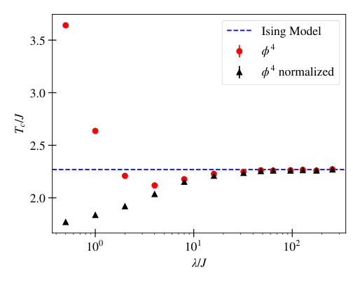
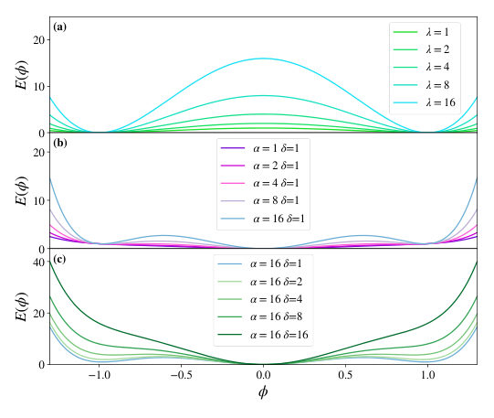
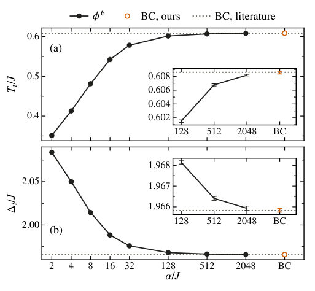
← Index · ← Previous · Next →
Authors: Ejaaz Merali, Ryan Larson, Ehsan Khatami, Richard T. Scalettar
Type: theory · Category: statistical mechanics · PDF: https://arxiv.org/pdf/2610.20982v1
Analysis basis: full PDF text, analyzed in chunks
Topic relevance: methods for driven-dissipative 1/5




Summary. This work analyzes the Blume-Capel model by reformulating it as a continuous $\phi^6$ field theory. The authors demonstrate that normalizing flows are powerful generative samplers capable of accurately mapping out the phase diagram across various transition types, including first-order coexistence regions. This provides a modern, data-driven approach to studying classical critical phenomena.
Why it may be interesting. The application of sophisticated machine learning tools like normalizing flows to map out complex, multi-phase statistical mechanical phase diagrams is highly relevant for understanding critical phenomena in condensed matter systems.
Main problem. The study investigates phase transitions in the Blume-Capel model by mapping it to a continuous $\phi^6$ field theory to test advanced sampling techniques.
Main result. Normalizing flow samplers are shown to be effective across the entire phase diagram, including challenging first-order transition regions, achieving accuracy comparable to traditional Monte Carlo methods.
Method. The authors employ Monte Carlo simulations combined with normalizing flows, a generative model, to sample the complex probability distributions associated with the $\phi^6$ lattice field theory.
Model / system. The system is based on the Blume-Capel model, generalized to a continuous spin $\phi^6$ theory. The Hamiltonian involves nearest-neighbor interactions and higher-order potential terms ($\alpha \sum \phi_i^2 (\phi_i^2 - 1)^2 + \delta \sum \phi_i^2$).
Key observables. Phase diagrams in the crystal-field-temperature plane, critical temperature ($T_c$), and the tricritical point coordinates.
Important parameters / regimes. Exchange constant ($J$), crystal field ($\Delta$ or $\delta$), and potential coefficients ($\alpha, \lambda$).
Assumptions / limitations. The soft-spin $\phi^6$ model provides a controlled testbed for studying transitions, and the flow model is assumed to accurately represent the target distribution.
Figures summary. Figures illustrate phase diagrams (e.g., $\phi^6$ theory dependence on $\delta$ and $\alpha$) and show the convergence of the soft-spin tricritical point to the discrete Blume-Capel limit.
Paper structure. The paper progresses by defining the physical models ($\phi^4$ and $\phi^6$), detailing the advanced sampling methods (MC vs. Flow), and presenting results showing the flow model's capability to map out the phase boundaries, especially near tricritical and first-order points.
We report Monte Carlo simulations of a continuous spin variant of the Blume-Capel model. We compute the phase diagrams in the crystal-field-temperature plane, as a function of the softness of the spins. We show that normalizing flows, a class of generative models capable of direct sampling without autocorrelation, are effective samplers across the phase diagram, including in the first-order transition region and in the vicinity of the tricritical point. Finite-size scaling analyses of flow samples locate the first- and second-order transitions as well as the tricritical point with accuracy comparable to canonical and extended-ensemble Monte Carlo.
Authors: Llorenç Balada Gaggioli
Type: theory · Category: quantum information and computing · PDF: https://arxiv.org/pdf/2610.21596v1
Analysis basis: full PDF text, analyzed in chunks
Topic relevance: quantum measurements 1/5
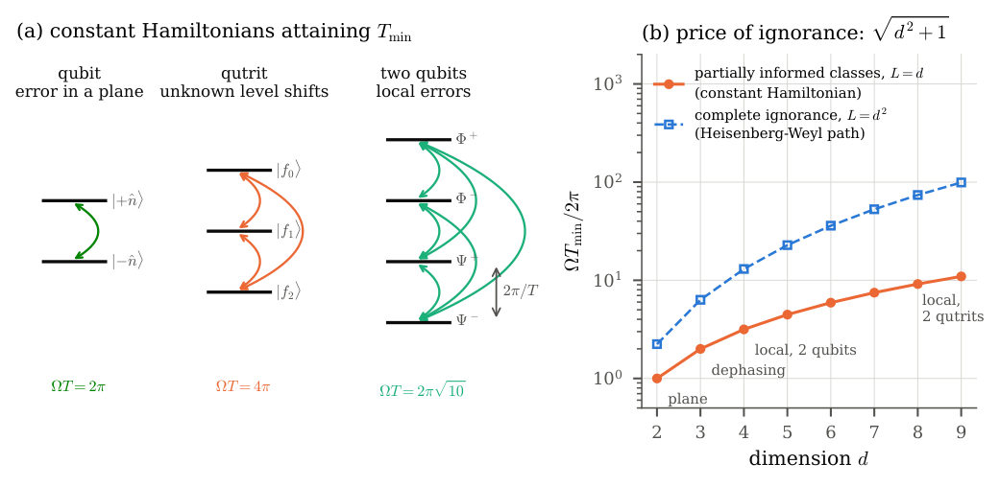
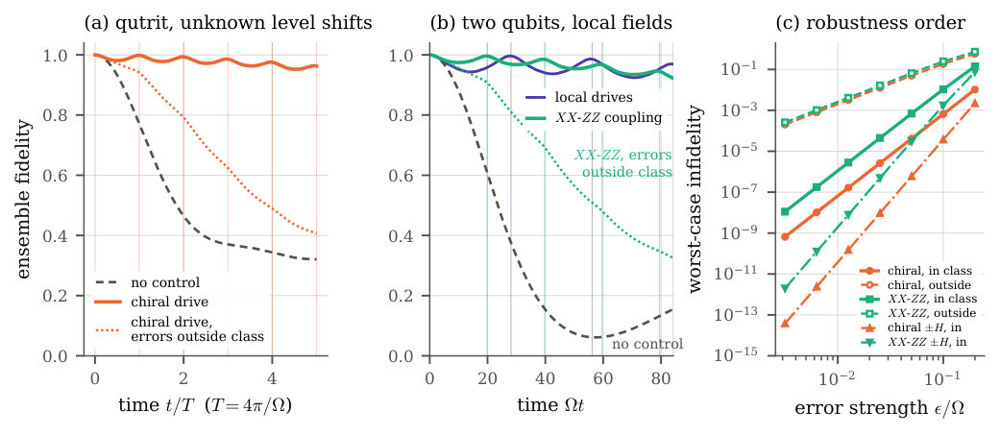
Summary. This theoretical paper investigates time-optimal robust quantum control when the noise error is only partially known. It shows that knowing the structure of the error class allows for the use of simple, constant control Hamiltonians that achieve the minimum possible control time. This finding is vital for designing practical quantum gates in noisy environments.
Why it may be interesting. This work provides concrete, quantitative results on how partial knowledge of noise structure can be exploited to design significantly faster and more efficient quantum control protocols, which is crucial for practical quantum computation.
Main problem. The paper determines the minimum time required for a bounded quantum control drive to robustly cancel, to first order, errors belonging to a partially known class $S$.
Main result. Partial knowledge of the error class allows for a time-independent (constant) Hamiltonian to achieve the global minimum time, significantly reducing the required control duration compared to completely unknown errors.
Method. The analysis uses first-order error expansion (Magnus expansion) and derives lower bounds for the control time by analyzing the signal overlap matrix (Gram matrix) of the system's time evolution signals.
Model / system. The system is a $d$-level quantum system subjected to a control Hamiltonian $H(t)$ and a small static error $\epsilon X$, where $X$ belongs to a known class $S$. The control aims to make the first-order error integral vanish.
Key observables. Minimum time ($\Omega T$), Infidelity ($1-F$), and the scaling exponent ($p$) of the infidelity with the error strength $\epsilon$.
Important parameters / regimes. The dimension $d$ of the system, the error strength $\epsilon$, and the control power bound $\Omega$.
Assumptions / limitations. The analysis is restricted to first-order error cancellation, and the control drive is assumed to be bounded and measurable in time.
Figures summary. Figures illustrate constant controls for various partially known error classes (e.g., qubit plane, qutrit level shifts) and compare the minimum duration against the case of completely unknown errors.
Paper structure. The paper progresses from establishing the general robustness condition ($\int U^\dagger X U dt = 0$) to deriving lower bounds using signal analysis (Gram matrix) and finally demonstrating that constant controls are optimal for several natural, partially known error classes.
Robust quantum control usually assumes one of two extremes: the error is of a known form and only its strength is unknown, or nothing at all is known about it. In practice one often sits in between. The size of a static error is unknown, but its class is known, for example, it only shifts energy levels, or it acts on each subsystem separately. We ask how fast a control can cancel, to first order, every error in such a class. A time-independent Hamiltonian can do this if and only if all errors in the class have zero diagonal in a common basis. In that case an equally spaced energy ladder in this basis does it after one period. A lower bound that holds for any time-dependent control with bounded drive power shows that this simple constant control is optimal for several natural classes, including unknown level shifts and unknown local errors on two subsystems. Completely unknown errors need a time-dependent control, and there, knowing the error class shortens the minimum time by a factor $\sqrt{d^2+1}$. So partial knowledge of the error changes not only how long an optimal robust control takes, but also its form.
Authors: Min Li, Xin Lu, Lei Wang, Jianpeng Liu
Type: theory · Category: strongly correlated electrons · PDF: https://arxiv.org/pdf/2610.21310v1
Analysis basis: full PDF text, analyzed in chunks
Topic relevance: analog quantum simulation 1/5
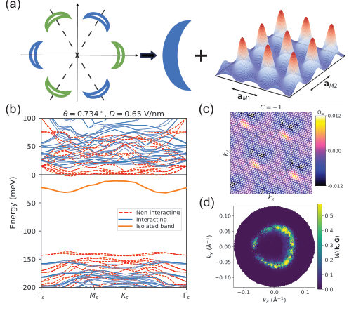
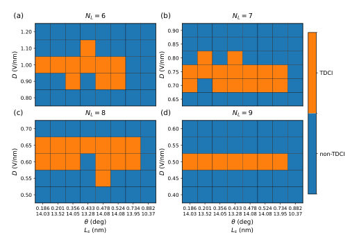
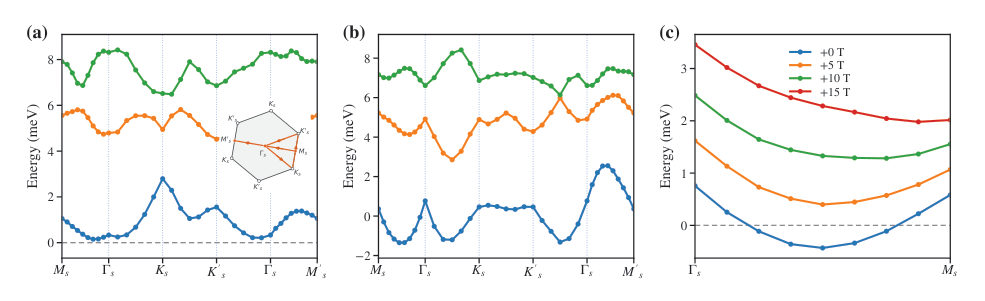
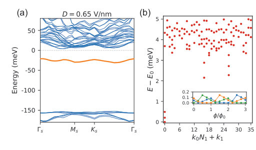
Summary. This theoretical work explores the emergence of a Transdimensional Chern Insulator (TDCI) in moiré superlattices of rhombohedral multilayer graphene. By analyzing the interplay between electron-electron interactions and moiré potentials, the authors predict a topological state characterized by quantized Chern numbers and unique orbital magnetizations. The findings suggest that these systems can host both integer and fractional topological phases, offering a tunable platform for quantum simulation.
Why it may be interesting. The coupling of topological invariants (Chern number) with orbital magnetism and density wave instabilities provides a rich playground for understanding emergent quantum phases in strongly correlated 2D electron systems.
Main problem. The study investigates the transition of an interaction-driven 'Fermi-lune' metal into a quantized Chern insulator phase, realizing a 'transdimensional Chern insulator' (TDCI).
Main result. The system can evolve into a TDCI state characterized by a spin-valley-polarized Chern band with $|C|=1$, exhibiting both in-plane and out-of-plane orbital magnetizations.
Method. The analysis employs unrestricted Hartree-Fock calculations, supplemented by a minimal two-band model, to map out phase diagrams and analyze collective excitations.
Model / system. The physical platform is rhombohedral multilayer graphene (RMG) superlattices coupled to a hexagonal boron nitride (hBN) moiré potential. The Hamiltonian incorporates continuum and lattice descriptions, modeling electron-electron interactions.
Key observables. Chern number ($|C|=1$), in-plane and out-of-plane orbital magnetizations ($M_y, M_z$), charge and spin soft modes, and the existence of fractional Chern insulator states.
Important parameters / regimes. Displacement field ($D$), twist angle ($ heta$), and filling fraction ($ u_{ ext{band}}$).
Assumptions / limitations. The analysis relies on Hartree-Fock approximations for the many-body ground state and uses minimal two-band models for description.
Figures summary. Figures illustrate the evolution from Fermi-lune states to Chern bands, show phase diagrams mapping TDCI regions based on doping and twist angle, and compare charge spectra for TDCI versus ordinary CIs.
Paper structure. The paper progresses by first establishing the anomalous magnetic behavior of the parent Fermi-lune metal, then demonstrating how moiré coupling drives the system into the topologically non-trivial TDCI state, followed by analyzing the stability via collective excitations and fractionalization.
Recent experiments on lightly electron-doped rhombohedral multilayer graphene (RMG) in the "transdimensional" regime revealed anomalous Hall hysteresis under both perpendicular and in-plane magnetic fields, pointing to the emergence of transdimensional orbital magnetism in an interaction-driven "Fermi-lune" metal. Here we demonstrate that, by coupling to the moiré potential, this transdimensional orbital ferromagnetic metal can evolve into quantized Chern insulator phases in twisted RMG/hBN moiré superlattices. Using unrestricted Hartree-Fock calculations, we find that interaction-driven reconstruction isolates a spin-valley-polarized $|C| = 1$ Chern band, leading to a "transdimensional Chern insulator" (TDCI) state exhibiting both in-plane and out-of-plane orbital magnetizations. A minimal two-band model is introduced to describe the unique properties of TDCI, which unveils the intimate connection between non-reciprocal velocity and in-plane orbital magnetization. We further analyze the collective excitations of TDCIs, and identify soft charge and spin modes that may lead to density wave instabilities in certain cases. An in-plane magnetic field can harden the soft density-wave mode and may drive a transition from density-wave state to TDCI. Finally, when the $|C| = 1$ band is fractionally filled, the many-body ground state may be a fractional Chern insulator with broken rotation and mirror symmetries.
Authors: S. Nakata, K. Yamamoto, J. Okamoto, D. Shiga, R. Takahashi, H. Y. Huang, H. Kumigashira, H. Wadati, A. Fujimori, S. Ishida, H. Eisaki, D. J. Huang, J. Miyawaki, H. Suzuki
Type: experiment · Category: strongly correlated electrons · PDF: https://arxiv.org/pdf/2610.21305v1
Analysis basis: full PDF text, analyzed in chunks
Topic relevance: Frenkel-Kontorova 1/5
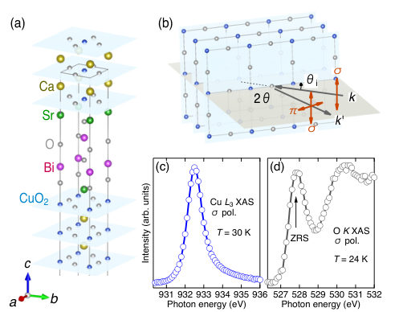
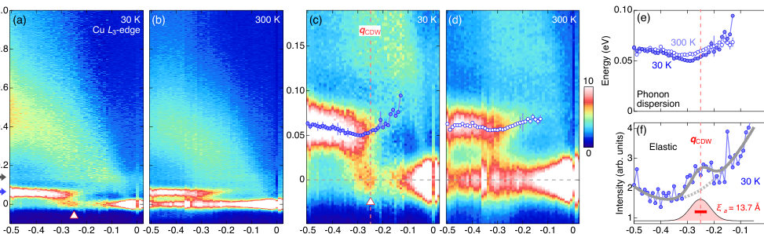
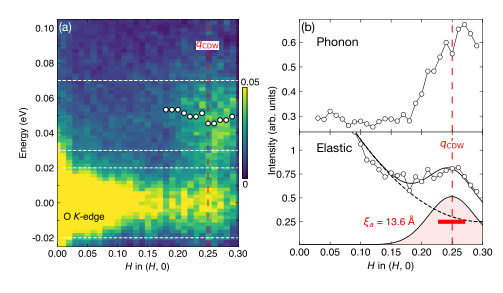
Summary. This work uses RIXS spectroscopy on optimally-doped $ ext{Bi2223}$ to characterize the CDW order, finding it to be coherent across the trilayer structure. Crucially, the study links the observed phonon softening directly to the interaction between the lattice vibrations and the quantum fluctuations associated with the CDW order.
Why it may be interesting. The detailed spectroscopic mapping of coupled electronic and lattice excitations (CDW fluctuations coupling to phonons) provides insights into the underlying pairing mechanism and competing orders in strongly correlated materials, which is relevant to understanding emergent quantum phenomena.
Main problem. The paper investigates the complex interplay and competition between Charge-Density-Wave (CDW) order and superconductivity in cuprate superconductors, specifically in the optimally-doped trilayer system.
Main result. They observe a coherent, short-range CDW order across the trilayers and demonstrate that the observed phonon softening is driven by the coupling between these CDW fluctuations and the lattice phonon branch.
Method. The primary technique used is Resonant Inelastic X-ray Scattering (RIXS) performed at both the Cu $L_3$-edge and O $K$-edge.
Model / system. The physical system is the optimally-doped trilayer cuprate $ ext{Bi}2 ext{Sr}_2 ext{Ca}_2 ext{Cu}_3 ext{O}$), which is a high-$T_c$ superconductor. The analysis treats the electronic structure as quasi-two-dimensional.}$ ($ ext{Bi2223
Key observables. CDW wavevector ($\mathbf{q}_{ ext{CDW}} = (0.25, 0)$), CDW fluctuations, phonon softening (phonon energy minimum), and correlation length ($\xi_a$).
Important parameters / regimes. Optimal doping, $T_c = 110 ext{ K}$, and the distinct probing capabilities of the Cu $L_3$ and O $K$ edges.
Assumptions / limitations. The RIXS phonon anomaly is attributed specifically to the coupling between CDW fluctuations and the phonon branch, distinguishing it from conventional self-energy effects.
Figures summary. Figures show RIXS intensity maps confirming the static CDW wavevector and resolving phonon/two-phonon excitations, alongside spectral fits detailing phonon dispersion and quasi-elastic intensity.
Paper structure. The paper establishes the context of CDW/superconductivity competition, details the RIXS measurements at different edges, presents evidence for coherent CDW order across the trilayers, and finally attributes the observed phonon softening to the electron-phonon coupling mediated by CDW fluctuations.
Charge-density-wave (CDW) order is a ubiquitous feature of cuprate superconductors that competes with superconductivity. However, its behavior remains poorly understood in trilayer compounds, which contain the optimal number of CuO$_2$ layers for superconductivity. Here, we report Cu $L_3$- and O $K$-edge resonant inelastic x-ray scattering (RIXS) measurements of optimally-doped Bi$_{2}$Sr$_{2}$Ca$_{2}$Cu$_{3}$O$_{10+δ}$ (Bi2223), the trilayer cuprate with the highest superconducting transition temperature ($T_c$) among Bi-based cuprates. We observe CDW order with a single in-plane wavevector of ${\bm q}_{\text{CDW}} = (0.25, 0)$, demonstrating that a coherent CDW order is formed across the trilayers. We also resolve CDW fluctuations emanating from the static order, whose profiles differ between the Cu $L_3$ and O $K$ edges. The phonon softening occurs where these CDW fluctuations interact with the phonon branch, indicating that the RIXS phonon anomaly is driven by the coupling between CDW fluctuations and the phonon branch.
Papers from primary archives without highlighted authors or any topic match. Click to expand.
Authors: Koushik Bhakta, Bikash Bhattacharjya
Type: theory · Category: quantum information and computing · PDF: https://arxiv.org/pdf/2610.21946v1
Analysis basis: full PDF text, analyzed in chunks
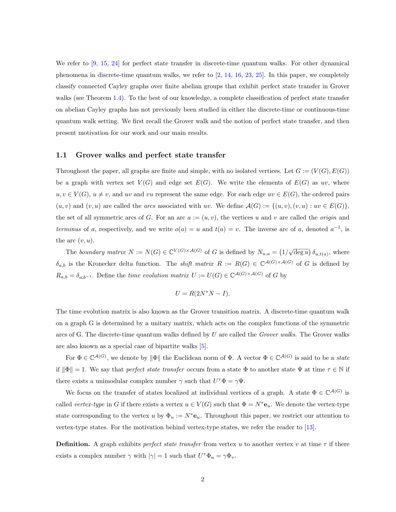
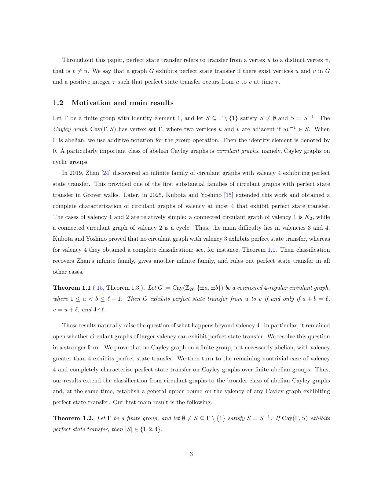
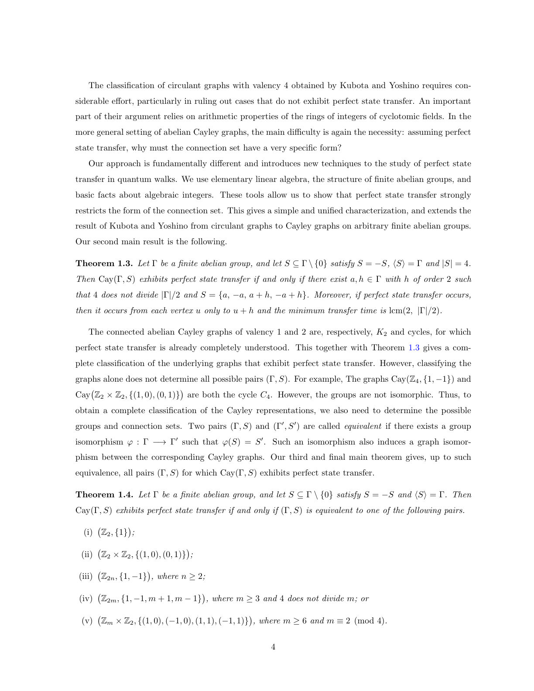
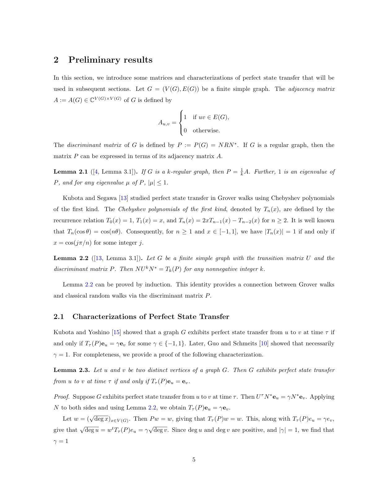
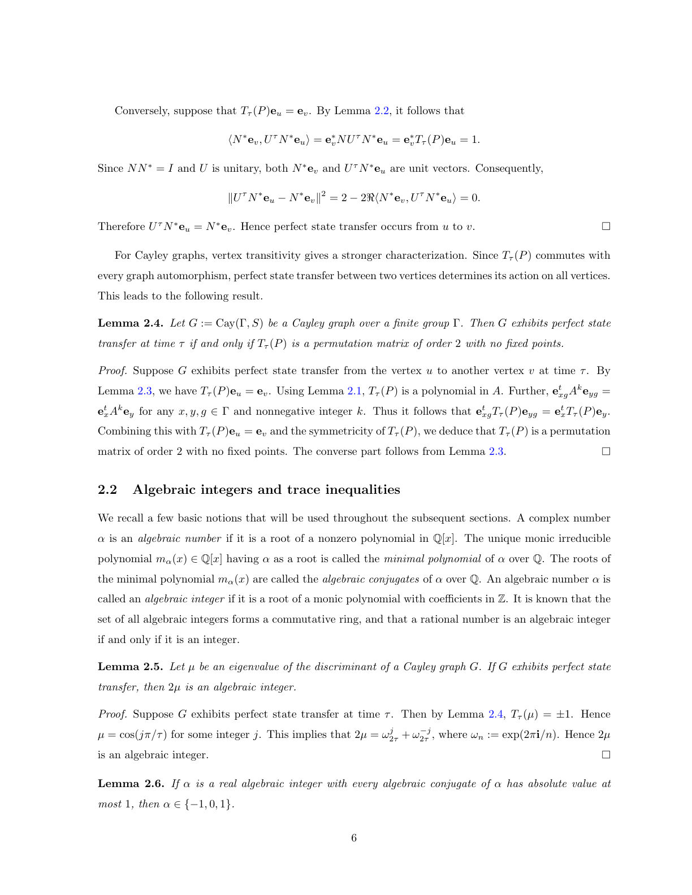
Summary. This paper provides a complete mathematical classification of all connected Cayley graphs over finite abelian groups that exhibit perfect state transfer (PST) under Grover walks. By analyzing the spectral properties and structural constraints imposed by PST, the authors prove that the graph's valency must be 1, 2, or 4. The result is a definitive list of the pairs $(\Gamma, S)$ that support this quantum phenomenon.
Why it may be interesting. This work provides a deep mathematical characterization of quantum walk dynamics on highly structured graphs (Cayley graphs). The techniques used—linking quantum walk properties to algebraic graph theory—are relevant for understanding quantum transport in periodic or highly symmetric quantum systems.
Main problem. To completely classify all connected Cayley graphs over finite abelian groups that exhibit perfect state transfer (PST) when subjected to Grover walks.
Main result. The classification yields five specific, inequivalent pairs of (Group, Connection Set) that admit PST, severely restricting the possible structure of such graphs.
Method. The authors use linear algebra, group theory, and spectral analysis of the transition matrix derived from the Grover walk Hamiltonian. They establish necessary conditions on the graph's valency and the structure of the connection set.
Model / system. The model is the Grover walk, a discrete-time quantum walk, implemented on a finite graph $G = ext{Cay}(\Gamma, S)$, where $\Gamma$ is a finite abelian group and $S$ is the connection set. The evolution is governed by a transition matrix $U$ derived from the adjacency matrix $A$.
Key observables. Perfect State Transfer (PST) from vertex $u$ to $v$ at time $ au$, defined by the condition $T_ au(P)e_u = \gamma e_v$. The valency $|S|$ is also a key diagnostic.
Important parameters / regimes. The valency $|S|$ must be 1, 2, or 4. The structure of the group $\Gamma$ and the specific generating set $S$ are the primary parameters.
Assumptions / limitations. The graphs considered are finite, simple, and connected. The analysis relies on the mathematical structure of the Cayley graph and the properties of the associated quantum walk operator $P$.
Figures summary. The notes summarize the final classification in a table (Table 1), listing five inequivalent pairs $(\Gamma, S)$ that admit PST, along with the corresponding displacement $h$ and minimum transfer time $ au_{\min}$.
Paper structure. The paper proceeds by establishing general bounds on the valency (showing $|S| \in \{1, 2, 4\}$), then analyzing the valency-4 case using structural constraints ($S+h=S$), and finally presenting the complete classification by examining all possible structures for $|S|=1, 2, 4$.
We completely classify connected Cayley graphs over finite abelian groups that exhibit perfect state transfer in Grover walks. First, we show that a Cayley graph over any finite group exhibiting perfect state transfer has valency $1$, $2$, or $4$. For valency $4$, we prove that an abelian Cayley graph $\operatorname{Cay}(Γ,S)$ exhibits perfect state transfer if and only if $S=\{a,-a,a+h,-a+h\}$, where $h$ has order $2$, and $4\nmid |Γ|/2$. Combining this characterization with the valency-one and valency-two cases, we explicitly determine all pairs $(Γ,S)$ for which $\operatorname{Cay}(Γ,S)$ exhibits perfect state transfer. Our results extend the classification of circulant graphs of valency at most four obtained by Kubota and Yoshino [Circulant graphs with valency up to 4 that admit perfect state transfer in Grover walks, \emph{J. Comb. Theory Ser. A.}, 216 (2025) 106064] to Cayley graphs over arbitrary finite abelian groups and to all valencies.
Authors: Karl P. Horn, Christiane P. Koch
Type: theory · Category: other · PDF: https://arxiv.org/pdf/2610.20882v1
Analysis basis: full PDF text, analyzed in chunks
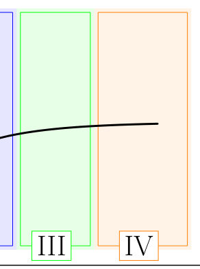
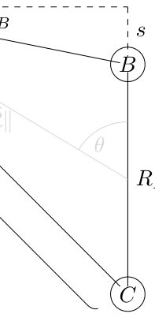
Summary. This tutorial provides a detailed guide on applying quantum scattering theory to calculate collision cross sections for bimolecular systems. It systematically develops a numerical framework by deriving the coupled-channel equations and employing advanced techniques like Numerov's method. The work is crucial for accurately modeling energy exchange in gas-phase molecular collisions.
Why it may be interesting. This is highly relevant as it provides the foundational computational techniques (coupled-channel methods, numerical solvers) necessary for modeling molecular interactions, which is central to AMO physics.
Main problem. The paper aims to bridge the gap between the abstract quantum mechanical theory of scattering and the practical numerical methods needed to simulate real-world bimolecular collisions.
Main result. It develops a comprehensive framework to calculate collision cross sections by deriving and solving the coupled-channel representation of the scattering problem.
Method. The methodology involves formulating the problem in Dirac notation, deriving coupled-channel equations, and implementing numerical solvers like Numerov's method to find time-independent wavefunctions.
Model / system. The system studied is the collision of atoms and molecules in the gas phase. The Hamiltonian is treated by separating the total system into internal, kinetic, and interaction potential energy components.
Key observables. Cross sections, scattering amplitudes, and S-matrix elements.
Important parameters / regimes. Collision energy, reduced masses, and the potential energy surface derived from the interaction potential.
Assumptions / limitations. The Born-Oppenheimer approximation is used to separate electronic and nuclear motion, and the focus is on the relative motion Hamiltonian.
Paper structure. The structure moves from the formal derivation of the coupled-channel equations to solving the single-channel problem using Numerov's method, and finally extends this to multi-channel calculations for inelastic atom-diatom collisions.
Collisions between atoms and molecules govern how energy is exchanged and redistributed in the gas phase, underpinning phenomena from spectral line broadening and interstellar molecular excitation to the cooling and trapping of molecules. A quantitative account of these collisions requires connecting the theoretical description of the interaction between the collision partners to measurable quantities such as cross sections. However, scattering theory as presented in quantum mechanics textbooks does not readily translate into numerical methods. Here, we formulate the scattering problem in Dirac notation, as customary in present-day quantum mechanics courses, and show how to build a practical numerical framework from it. We derive the "coupled channel" representation of the scattering problem with correct asymptotic behaviour and introduce Numerov's method to obtain time-independent wavefunctions, from which we calculate cross sections, the observables measured in scattering experiments. Starting from single channel scattering, we build up to the realistic collision of a ground-state atom with a diatomic molecule.
Authors: Francesco Alemanno
Type: theory · Category: disordered systems and neural networks · PDF: https://arxiv.org/pdf/2610.22191v1
Analysis basis: full PDF text, analyzed in chunks
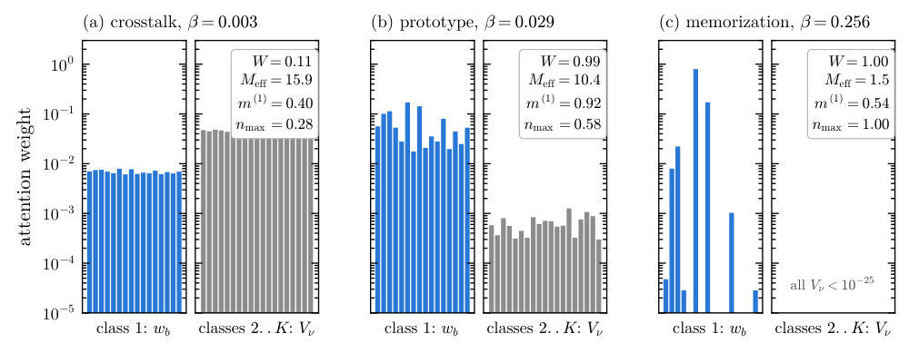
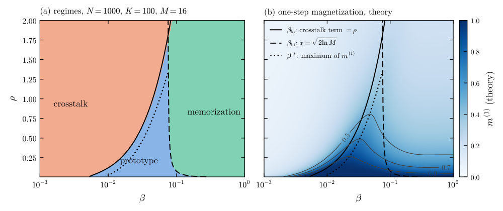
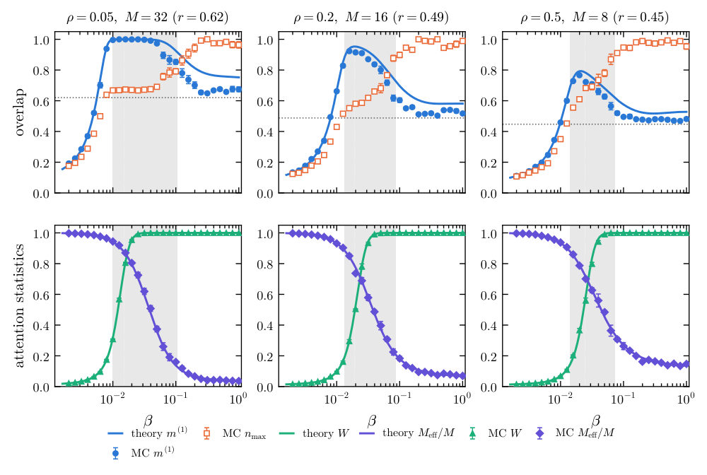
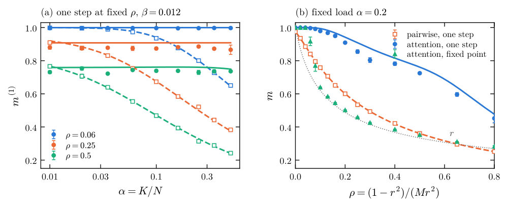
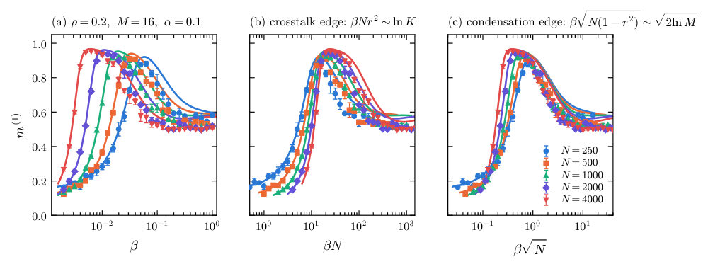
Summary. This work analyzes an exponential Hopfield network using attention layers to study how associative memory systems generalize versus memorize. By analyzing the effective attention entropy, the authors derive a quantitative understanding of the transition between these two regimes as a function of temperature and system load. This provides deep theoretical insights into the operational limits of attention-based learning.
Why it may be interesting. The direct mapping of attention mechanisms to established statistical physics concepts like spin-glass phases and REM freezing provides a powerful theoretical framework for understanding modern deep learning architectures.
Main problem. The paper investigates the trade-off between generalization and memorization when using attention mechanisms (softmax) over noisy examples in associative memory models.
Main result. The system exhibits three distinct regimes controlled by the inverse temperature $\beta$: small $\beta$ yields pairwise crosstalk, intermediate $\beta$ shows generalization, and large $\beta$ leads to memorization, analogous to the Random Energy Model freezing transition.
Method. The analysis employs signal-to-noise theory, deriving closed-form expressions for the overlap using an effective attention entropy $\rho_{\text{eff}}(\beta)$.
Model / system. The model is an exponential Hopfield network where the stored keys are noisy training examples. The dynamics are mapped onto a single head of self-attention, connecting it to established theories of associative memory.
Key observables. Generalization overlap $m(1)$, memorization measure $n_{\max}$, and the effective attention entropy $\rho_{\text{eff}}(\beta)$.
Important parameters / regimes. Load $\alpha=K/N$, dataset entropy $\rho$, and the inverse temperature $\beta$.
Assumptions / limitations. The analysis relies on Gaussian approximations (Central Limit Theorem) for the field acting on a neuron, which is assumed valid except in the highly condensed regime.
Figures summary. Figures illustrate the three operational regimes (crosstalk, prototype, memorization) across varying inverse temperatures $\beta$, and show diagnostic plots for MNIST/fashion-MNIST data.
Paper structure. The paper builds from comparing the exponential model to the pairwise model, deriving the one-step magnetization $m(1)$ using $\rho_{\text{eff}}$, and then analyzing the transition between generalization and memorization as $\beta$ is varied.
In Hebbian learning from examples a Hopfield network of $N$ neurons is not supplied with the $K$ archetypes it has to retrieve but with $M$ blurred examples of each, of quality $r$, and whether it can infer them depends on the load $α=K/N$ (interference among them) and on the dataset entropy $ρ=(1-r^2)/(Mr^2)$ (how little the examples say about them). We transfer this protocol to the exponential Hopfield model, whose zero-temperature update is a step of softmax attention with the unlabelled examples as keys. A signal-to-noise analysis gives in closed form the overlap between the output and an unseen archetype, $m^{(1)}={\rm erf}(1/\sqrt{2ρ_{\rm eff}})$: the majority-rule law of the pairwise model at small load, with $ρ$ replaced by an attention entropy $ρ_{\rm eff}$ built from the weight the softmax gives to the correct class and the number of examples it spreads it over. Two consequences follow. First, in a window of inverse temperatures $β$ that widens as $\sqrt N$ the interference between archetypes is exponentially small in $Nβ$: the load drops out and the number of archetypes that can be learnt grows as $\exp(c\sqrt N)$. Second, learning fails differently: in the pairwise model through a spin-glass phase, in the exponential model through memorization: the softmax concentrates its weight on the training example closest to the input and returns it in place of the archetype. Seen from the input the softmax weights are those of the random energy model, and memorization is its freezing transition, at $β\sqrt{N(1-r^2)}\simeq\sqrt{2\ln M}$; it is measurable on a head whose keys are examples as the number of examples carrying weight. On MNIST the diagnostic follows the random-energy prediction; on fashion-MNIST it detects sub-clusters in the classes, and the best accuracy lies beyond the memorization threshold, where the softmax reads out a local sub-prototype.
Authors: Darian Hall, Luke Pritchard Cairns, Nico Rowland, Yuanqi Lyu, Kohtaro Yamakawa, Josue Rodriguez, Kirin Chanteloup, Didier Perrodin, Joel E. Moore, James G. Analytis
Type: both · Category: strongly correlated electrons · PDF: https://arxiv.org/pdf/2610.22361v1
Analysis basis: full PDF text, analyzed in chunks
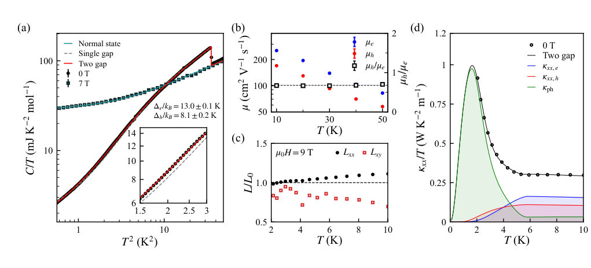
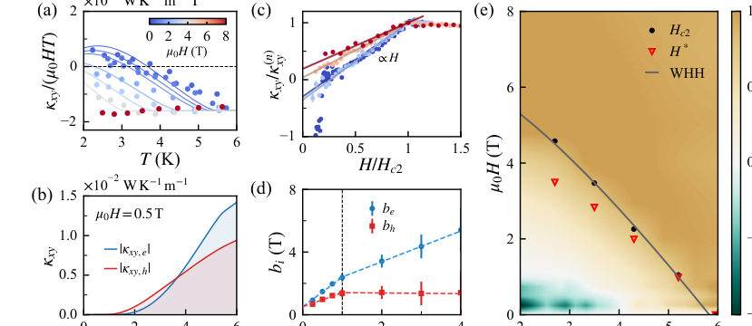
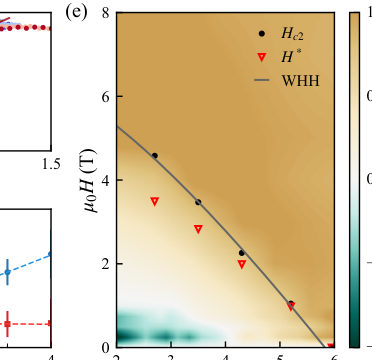
Summary. This work uses the thermal Hall effect ($\kappa_{xy}$) in the heavy-fermion superconductor CeRu2 to overcome limitations of standard superconducting probes. By analyzing how $\kappa_{xy}$ changes with magnetic field, the authors definitively assign the larger superconducting gap to the electron-like Ce 4f bands and the smaller gap to the hole bands. This demonstrates a powerful, multi-faceted approach to characterizing multiband superconductivity.
Why it may be interesting. The use of thermal transport ($\kappa_{xy}$) to resolve ambiguities in pairing symmetry and gap structure in strongly correlated materials is a sophisticated diagnostic tool relevant to understanding exotic superconducting states.
Main problem. Standard bulk probes cannot assign superconducting pairing gaps to specific electron or hole Fermi surfaces in multiband superconductors.
Main result. Thermal Hall transport ($\kappa_{xy}$), combined with specific heat and magnetotransport, uniquely determines the two superconducting gaps, placing the larger gap on the heavy Ce 4f electron sheets.
Method. The authors combine multiple transport measurements ($\kappa_{xy}, \kappa_{xx}, C/T$) and theoretical modeling (two-band BCS/BRT theory) to constrain the electronic degrees of freedom.
Model / system. The study focuses on the compensated heavy-fermion superconductor CeRu2, which exhibits two distinct electronic bands (electron and hole) contributing to superconductivity.
Key observables. Thermal Hall conductivity ($\kappa_{xy}$), specific heat ($C/T$), longitudinal thermal conductivity ($\kappa_{xx}$), and normal-state magnetotransport ($\mu_h/\mu_e$).
Important parameters / regimes. Superconducting gaps ($\Delta_e/k_B \approx 13 ext{ K}$, $\Delta_h/k_B \approx 8 ext{ K}$), mobility ratio ($\mu_h/\mu_e = 0.68$), and the low-field sign reversal in $\kappa_{xy}$.
Assumptions / limitations. The electronic channel can be modeled as the sum of two independent s-wave BRT contributions, and the analysis relies on the compensation of electron and hole contributions in the normal state.
Figures summary. Figures show specific heat fits to a two-gap model, the dependence of $\kappa_{xy}$ on temperature and field exhibiting a sign reversal, and the decomposition of $\kappa_{xx}$ into electronic and phononic parts.
Paper structure. The paper first establishes the ambiguity in gap assignment using bulk probes, then introduces $\kappa_{xy}$ as the diagnostic tool. It uses the combination of $\kappa_{xy}$ with zero-field thermodynamics and magnetotransport to uniquely assign the gaps, concluding with quantitative parameter extraction.
Standard bulk probes of multiband superconductors cannot assign pairing gaps to specific electron or hole Fermi surfaces. Here we show that thermal Hall transport ($κ_{xy}$), constrained by specific heat and normal-state magnetotransport, resolves this ambiguity in the compensated heavy-fermion superconductor CeRu$_2$. Fixing the gap magnitudes ($Δ_e/k_B\approx 13$K, $Δ_h/k_B\approx 8$K) and band mobilities completely determines the electronic degrees of freedom in $κ_{xx}$ and $κ_{xy}$. A low-field sign reversal in $κ_{xy}$ places the larger gap on the heavy Ce $4f$ electron sheets and the smaller on the hole sheets.
Authors: Tze Ue Ngai, Zuocheng Zhang, Q. Zhang, Youssef Jeyar, Jingwei Li, Zhengtang Luo, Mauro Antezza, H. B. Chan
Type: both · Category: other · PDF: https://arxiv.org/pdf/2610.21437v1
Analysis basis: full PDF text, analyzed in chunks
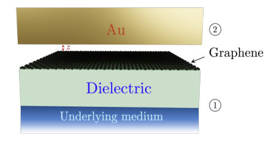

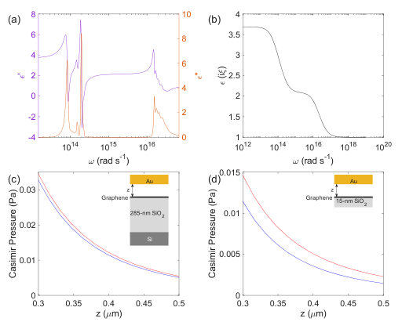
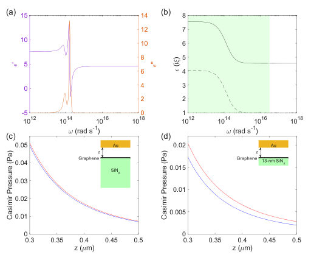
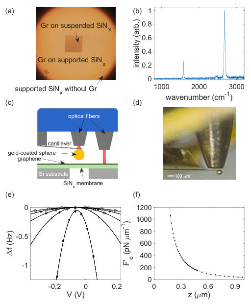
Summary. This research theoretically and experimentally investigates the Casimir force on graphene-coated suspended dielectric membranes. The key finding is that using a thin dielectric membrane instead of a bulk substrate significantly enhances the measurable thermal dependence of the Casimir force. This work is crucial for developing stable, highly sensitive nanomechanical devices by controlling long-range quantum forces.
Why it may be interesting. This work bridges fundamental quantum electrodynamics (Casimir effect) with modern materials science (graphene, thin dielectrics) and nanomechanics, providing quantitative predictions for forces at the nanoscale that are relevant to quantum sensing and actuation.
Main problem. The paper investigates the Casimir force acting on thin dielectric membranes covered with graphene, with a specific focus on quantifying and understanding the thermal dependence of this force.
Main result. Theoretically, replacing a solid substrate beneath graphene with a thin dielectric membrane partially restores the strong thermal dependence of the Casimir force. Experimentally, measurements confirmed force gradients consistent with theory, although resolving the full thermal dependence was limited by material property uncertainties.
Method. The study employs both theoretical calculations using the Lifshitz formalism and experimental force measurements using a resonant cantilever detector.
Model / system. The system involves a solid gold plate interacting with a suspended dielectric membrane ($ ext{SiO}_2$ or $ ext{Si}_3 ext{N}_4$) coated with graphene. Theoretical models incorporate the graphene conductivity and the dielectric response of the supporting materials.
Key observables. Casimir pressure and force gradient ($F'$), and the change in force gradient when temperature increases from 10 K to 294 K.
Important parameters / regimes. Separation distance ($z \sim 500 ext{ nm}$), Temperature ($T$), and the dielectric properties ($\epsilon(\omega)$) of $ ext{SiO}_2$ and $ ext{Si}_3 ext{N}_4$.
Assumptions / limitations. The theoretical framework relies on the Lifshitz formalism and the Proximity Force Approximation (PFA). Experimental analysis assumes the membrane remains flat and relies on accurate optical characterization of the dielectric layers.
Figures summary. Figures illustrate the schematic setup, the measured force gradients comparing theory to experiment for both solid and suspended membranes, and the optical properties ($\epsilon'(\omega)$ and $\epsilon''(\omega)$) of the dielectric materials.
Paper structure. The paper progresses from theoretical modeling of the Casimir force using the Lifshitz formalism, detailing the role of graphene and the substrate. It then presents experimental measurements using a cantilever setup, comparing the measured force gradients on solid versus suspended membranes, and concludes by discussing the implications for nanomechanical stability.
We investigate the Casimir force on thin suspended dielectric layers covered with graphene, both theoretically and experimentally. Thermal effects of the Casimir force on graphene occur at separations significantly smaller compared to ordinary metals and dielectrics. At such small separations, the Casimir force is sufficiently strong to be measured experimentally. However, the presence of substrates to support the graphene significantly reduces the enhancement. We show theoretically that replacing the solid substrate beneath graphene with a thin dielectric membrane partially restores this strong thermal dependence. One of the interacting objects is a solid gold plate. The other object is a suspended dielectric membrane made of either 15 nm of silicon oxide or 13 nm silicon nitride, covered with graphene. At a separation of $\sim$500 nm, theoretical predictions yield changes in the Casimir pressure of up to 54 % and 40 % for silicon oxide and silicon nitride, respectively, when the temperature is increased from 10 K to 294 K. Measurements were performed for graphene on a suspended silicon nitride membrane at room temperature, using a gold-coated sphere attached to a cantilever as the force sensor. The measured force gradient is consistent with the theoretical prediction, although the thermal dependence could not be resolved, in part because of uncertainties in the optical properties of silicon nitride. Replacing a bulk substrate with a thin dielectric membrane covered with graphene provides a substantial reduction of the Casimir force, which may facilitate the stable operation of neutral nanomechanical elements at small separations.
Authors: Gerardo Adesso, Ludovico Lami, Vittorio Giovannetti
Type: theory · Category: quantum information and computing · PDF: https://arxiv.org/pdf/2610.22308v1
Analysis basis: full PDF text, analyzed in chunks
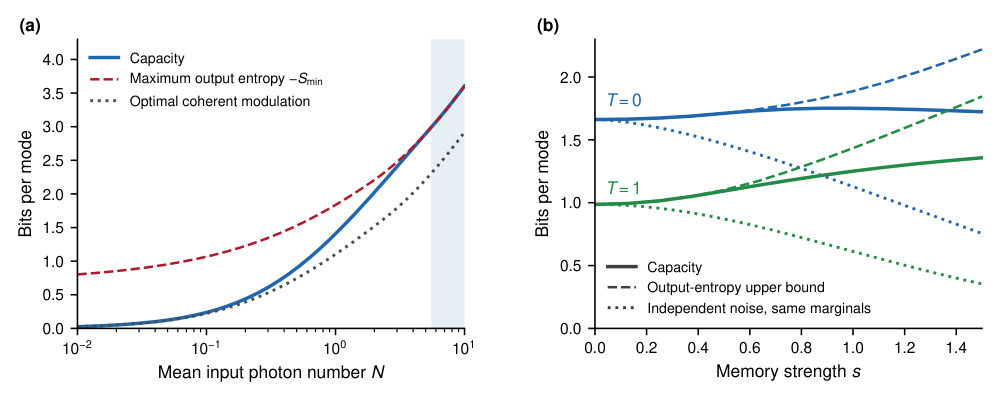
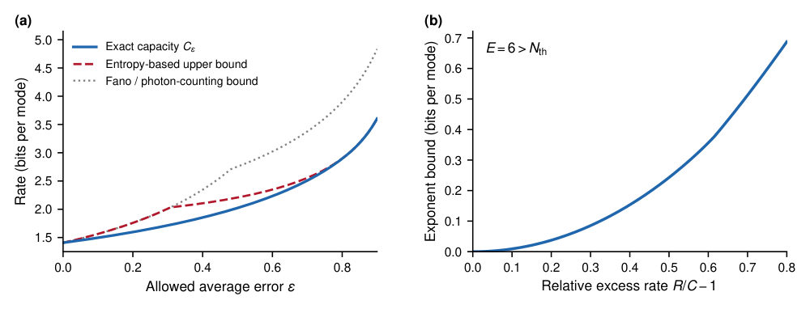
Summary. This paper rigorously determines the classical capacity for single-mode bosonic Gaussian channels, proving that Gaussian states are optimal for information transmission. It establishes that the capacity is additive across multiple channel uses and derives precise formulas for the rate-error trade-off. These results set the ultimate theoretical limits for classical communication in fundamental quantum optical systems.
Why it may be interesting. This work provides fundamental, quantitative limits on classical communication in bosonic quantum channels, which is crucial for understanding the ultimate performance of quantum communication technologies like quantum key distribution or quantum networking.
Main problem. The paper determines the classical capacity of single-mode bosonic Gaussian channels, specifically proving that Gaussian encodings are optimal and that the capacity is additive across channel uses.
Main result. The classical capacity is achieved by independently prepared Gaussian states with Gaussian-distributed random displacements, and the rate-error trade-off is determined by a simple energy-rescaling formula.
Method. The analysis involves optimizing the Holevo information under energy constraints, utilizing lower bounds on output entropy derived from second moments, and establishing converse bounds using techniques like the Petz-Rényi divergence.
Model / system. The system modeled is a single-mode bosonic Gaussian channel, which is used to represent standard loss and noise mechanisms found in optical or microwave communication links.
Key observables. Classical Capacity $C(\Phi, E)$, Energy-constrained Holevo information $\chi(\Phi, E)$, and the probability of correct decoding $p_{ ext{succ}}$.
Important parameters / regimes. Mean input energy $E$, mean photon number $N$, and the error rate $\epsilon$.
Assumptions / limitations. The analysis focuses on the nondegeneracy assumptions for the channel parameters, and the results are derived for unassisted classical communication without feedback.
Figures summary. Not specified (Notes describe mathematical results and bounds rather than figure content).
Paper structure. The paper proceeds by first establishing the single-use optimization ($\chi(\Phi, E)$), then deriving the capacity $C(\Phi, E)$ by proving additivity, and finally extending the results to characterize the rate-error trade-offs and strong converse bounds.
The classical capacity of a noisy optical channel is the maximum rate at which information can be transmitted reliably, given a constraint on the mean input energy. For the ubiquitous bosonic Gaussian channels, which include standard models of loss and noise in fibre and free-space optical links, determining this rate requires addressing whether entanglement between channel uses or non-Gaussian signals can outperform Gaussian encodings. More precisely, the question is whether the energy-constrained Holevo information is additive across arbitrarily many channel uses and coincides with its Gaussian counterpart. We answer these fundamental questions in the affirmative for every single-mode bosonic Gaussian channel at every input energy. Namely, we prove that independently prepared Gaussian states with Gaussian-distributed random displacements achieve the capacity, including in the low-energy regime where squeezing the signals competes with encoding information in their displacement. Our proof connects an entanglement inequality to a sharp, additive lower bound on output entropy. We then characterise communication above capacity: under a strict total photon-number cutoff, the probability of correct decoding decreases exponentially with the number of channel uses, and we derive explicit bounds on the decay exponent. When only the mean photon number is constrained, a simple energy-rescaling formula determines exactly the entire asymptotic rate--error trade-off: the capacity at mean photon number $N$ and allowed average decoding error $ε$ equals the vanishing-error capacity at mean photon number $N/(1-ε)$. Together, these results identify the ultimate limits of classical communication for some of the most fundamental models of optical communication.
Authors: Federico Petrovich, R. Rossignoli, M. Cerezo
Type: theory · Category: quantum information and computing · PDF: https://arxiv.org/pdf/2610.20988v1
Analysis basis: full PDF text, analyzed in chunks
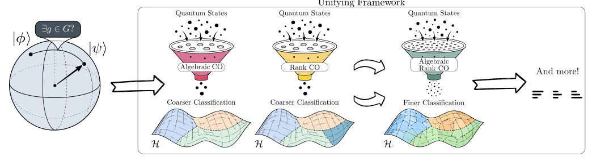
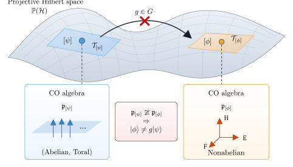
Summary. This paper introduces a general classification framework for quantum states by utilizing conserved operators (COs) derived from the allowed transformation group. By combining algebraic and rank-based COs, the authors provide the most refined, exhaustive classification of state convertibility classes for multiqubit systems up to $n=6$. This advances the theoretical understanding of quantum resource theories by providing rigorous algebraic invariants.
Why it may be interesting. This work provides a powerful, unified algebraic tool to classify entanglement and state distinguishability in multipartite quantum systems, which is central to quantum information theory.
Main problem. The paper develops a general framework to classify quantum states based on whether they can be interconverted by a given set of allowed quantum transformations.
Main result. The classification is achieved by analyzing conserved operators (COs), yielding increasingly refined counts of fixed and continuous state types for higher qubit numbers (e.g., 4926 fixed types for $n=6$ qubits).
Method. The core method involves identifying conserved operators (both algebraic and rank-based) whose structure and dimension constrain the accessible orbit of the state under the transformation group.
Model / system. The study focuses on pure quantum states $|\psi angle$ in a finite-dimensional Hilbert space, where the allowed transformations are generated by a Lie group $G$. The analysis is systematically applied to multiqubit systems, particularly in the context of SLOCC (Stochastic Local Operations and Classical Communication).
Key observables. The dimension of the accessible orbit, determined by the dimension of the CO algebra ($D_p[\psi]$), and the specific set of conserved operators themselves.
Important parameters / regimes. The number of qubits ($n$), the structure of the underlying Lie algebra $\mathfrak{g}$, and the eigenvalues of the conserved operators.
Assumptions / limitations. The allowed transformations form a Lie group $G$ with a complex reductive Lie algebra $\mathfrak{g}$, and the framework relies on analyzing the kernel of the quantum covariance matrix.
Figures summary. The notes mention Figure 1 illustrating algebraic and rank COs, and Figure 2 showing the relationship between algebraic COs and state orbit tangent planes. The bulk of the results are presented in a highly detailed Table III, cataloging COs for up to 5 qubits.
Paper structure. The paper builds from defining the problem using COs, deriving mathematical tools like the covariance matrix criterion, establishing bounds on the number of COs, and then systematically applying this combined algebraic/rank CO approach to provide exhaustive classifications for increasing numbers of qubits.
Determining whether quantum states can be interconverted by a prescribed set of transformations is a fundamental problem in quantum information. Here we develop a general classification framework based on conserved operators (COs), i.e., not necessarily hermitian matrices having the state of interest as an eigenstate. We first show that COs belonging to the algebra generating the allowed transformations can be obtained from the kernel of a quantum covariance matrix. Their number determines the dimension of the accessible orbit, while their algebraic structure and eigenvalues provide further constraints on state convertibility. We establish general bounds on the number of COs and prove that highest-weight states, like separable states in the case of $n$ qudits, attain the maximum. We also show how these operators generate parent Hamiltonians having the characterized state as an exact ground state. We then also consider positive zero-eigenvalue COs, which encode forbidden directions of reduced density matrices and incorporate rank-based constraints into the same framework. Applying this approach to multiqubit SLOCC, we obtain complementary classifications from algebraic and rank COs. While for $n\leq 3$ qubits both lead to the usual classes, for $n=4$ qubits they distinguish 17 and 20 types separately, and 29 when combined. The combined classification yields 287 fixed types and $4$ continuous families for $n=5$ qubits, and 4926 fixed types and 147 continuous families for $n=6$ qubits, providing, to our knowledge, the most refined exhaustive classification of SLOCC-convertibility classes based on such data.
Authors: Eduardo Suárez, Christian Ostertag-Henning, Miguel Carvajal, Renato Lemus
Type: theory · Category: other · PDF: https://arxiv.org/pdf/2610.21707v1
Analysis basis: full PDF text, analyzed in chunks
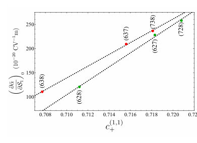
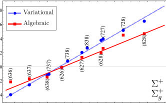
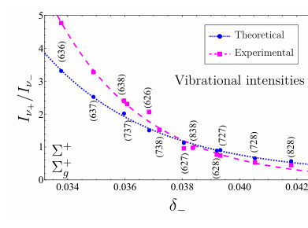
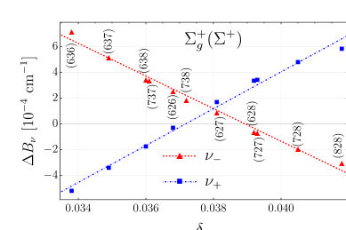
Summary. This paper investigates the relationship between the vibrational structure, quantified by the degree of normality ($\delta^-$), and the measurable Raman intensities across different isotopologues of $ ext{CO}_2$. Using an advanced anharmonic model, the authors establish quantitative correlations between $\delta^-$ and spectroscopic parameters. This work advances the theoretical understanding of molecular spectroscopy by linking fundamental vibrational symmetries to observable physical properties.
Why it may be interesting. This work provides a deep theoretical link between the underlying quantum mechanical structure of molecular vibrations (quantified by $\delta^-$) and observable spectroscopic quantities like Raman intensities, which is highly relevant to molecular physics and quantum optics.
Main problem. To establish quantitative correlations between the degree of normality of vibrational modes and measurable spectroscopic properties, specifically Raman intensities, across a series of $ ext{CO}_2$ isotopologues.
Main result. The study successfully establishes correlations linking the degree of normality ($\delta^-$) to Raman transition intensities and mean polarizability derivatives across the $ ext{CO}_2$ isotopologue series.
Method. The authors developed a general scheme to simulate Raman intensities by computing the mean polarizability surface up to cubic terms, utilizing an anharmonic model based on mapping between normal and local vibrational modes.
Model / system. The system studied is the isotopologue series of carbon dioxide ($ ext{CO}_2$). The theoretical framework involves mapping the vibrational Hamiltonian onto bosonic operators in both normal and local mode bases, incorporating symmetry considerations ($ ext{SU}(1) imes ext{SU}(3) imes ext{SU}(2)_2$).
Key observables. Raman intensities, mean polarizability derivatives, variational Raman shift errors, and the degree of normality ($\delta^-$).
Important parameters / regimes. The degree of normality ($\delta^-$), normal mode frequencies ($\Omega_\iota$), and Fermi interaction strength ($\alpha_F$).
Assumptions / limitations. The analysis extends the adiabatic internal modes formalism from IR intensities to Raman spectroscopy, and the calculations rely on mapping between normal and local bosonic operators.
Figures summary. Not specified, but the notes indicate the use of Tables 1 and 2 to present calculated coefficients and the degree of normality ($\delta^-$) for various isotopologues.
Paper structure. The paper progresses from identifying the core problem (correlating normality and spectroscopy) to developing the mathematical formalism (expanding coordinates and defining $\delta^-$), and finally presenting the results showing the established correlations across the isotopologue series.
Previous studies on the vibrational structure of carbon dioxide isotopologues have revealed a correlation between the strength of Fermi interactions and a recently defined normal-mode parameter. In this contribution, we investigate how the Raman intensities of the most intense bands evolve across the complete series of carbon dioxide isotopologues at room temperature. To this end, we introduce a general scheme for simulating Raman intensities in linear triatomic molecules, based on the computation of the mean polarizability surface up to cubic terms for all twelve stable species. For the first time, we establish correlations between the degree of normality and the Raman transition intensities, mean polarizability derivatives, and variational Raman shift errors across the CO$_2$ isotopologue series. The observed trends are further analyzed by considering rotational contributions, which may partially account for the deviations observed in the correlations. Our study is supported by experimental Raman spectra of isotopically enriched samples and theoretical simulations. Although this study focuses on carbon dioxide, similar behavior is expected for other series of isotopologues.
Authors: João Santos, Jayshankar Nath, Marco Pezzutto, Valentin Savin, Tristan Meunier, Yasser Omar
Type: theory · Category: quantum information and computing · PDF: https://arxiv.org/pdf/2610.22199v1
Analysis basis: full PDF text, analyzed in chunks
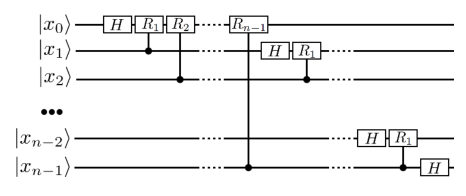
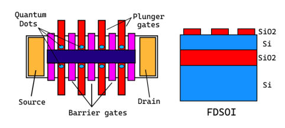
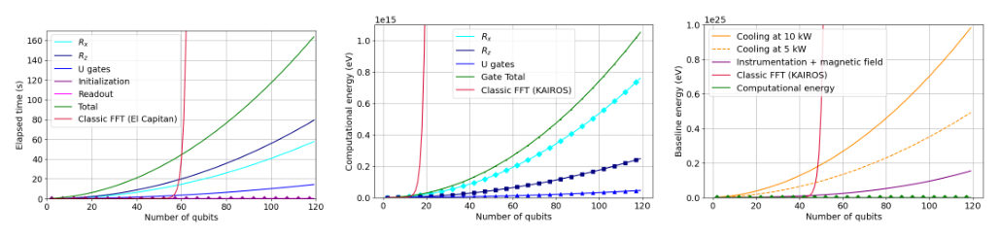
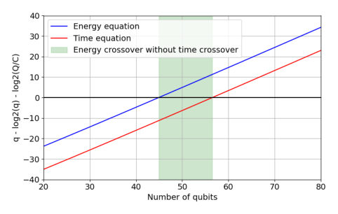
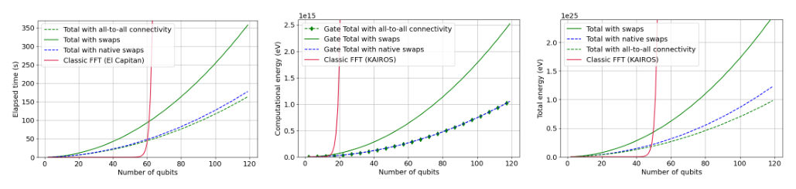
Summary. This paper provides a comprehensive energy analysis of fault-tolerant quantum computation using semiconductor spin qubits. It compares the energy scaling of quantum algorithms like QFT against classical counterparts and quantifies the energy overhead from necessary Quantum Error Correction (QEC) and cryogenic control electronics. The results suggest that quantum computing can achieve significant energy advantages at scale, provided the control electronics are optimized.
Why it may be interesting. The detailed energy budget analysis, especially the focus on cryoelectronics and the comparison to classical power limits, provides crucial engineering constraints for realizing large-scale quantum processors.
Main problem. The paper evaluates the energy efficiency and scaling of fault-tolerant spin-qubit quantum computation compared to classical computation.
Main result. For large systems ($\sim 10^6$ qubits), the estimated power consumption is $\sim 100 ext{ kW}$, which is an order of magnitude lower than current high-performance classical systems.
Method. The authors developed a detailed energy budget by analyzing the Quantum Fourier Transform (QFT) versus the classical FFT, and by quantifying the energy costs associated with surface-code Quantum Error Correction (QEC) cycles and cryogenic control electronics.
Model / system. The platform studied is semiconductor spin qubits, which are promising for scalable quantum computing due to their compatibility with semiconductor manufacturing. The analysis models the energy costs across initialization, computation, readout, and baseline infrastructure.
Key observables. Power consumption (kW), energy cost, energy crossover point (QFT vs. FFT), and total dissipated power in the cryoelectronics.
Important parameters / regimes. System scale of $10^6$ physical qubits; control-signal demultiplexing ratio; code distances (e.g., 13 and 25); and cryogenic cooling constraints.
Assumptions / limitations. The analysis assumes specific gate decompositions for QEC cycles and models the power dissipation based on CMOS technology for control electronics, while acknowledging that the comparison to classical tasks is not always directly equivalent.
Figures summary. Figures illustrate the QFT circuit, quantum dot array structures (1D and 2D), and detailed circuit diagrams for the multiplexing and demultiplexing components used in the cryoelectronics.
Paper structure. The paper proceeds by first benchmarking the QFT against FFT for energy crossover, then incorporating the energy costs of surface-code QEC cycles (analyzing gate counts and energy per cycle), and finally detailing the total power dissipation budget for the necessary cryogenic control and readout circuitry.
Semiconductor spin qubits offer a promising route to compact and scalable quantum computers, combining long coherence times in isotopically purified silicon with compatibility with semiconductor manufacturing. Beyond computational speedup, their energy efficiency is an important consideration for future large-scale systems. We evaluate the power and energy requirements of a Loss-DiVincenzo spin-qubit quantum computer by analyzing the Quantum Fourier Transform (QFT) and benchmarking it against the classical Fast Fourier Transform (FFT). We develop a detailed energy budget, identifying cryogenic cooling as the dominant baseline contribution before quantum error correction (QEC). The comparison between the QFT and the classical FFT reveals that, for any quantum workload operating under a polynomially bounded sampling regime, the crossover in energy consumption occurs at smaller problem sizes than the crossover in execution time. Thus, quantum computing can become energetically competitive before achieving a speedup in execution time. We then incorporate surface-code QEC and analyze the energy costs of QEC cycles, gate synthesis, and decoding. At scale, instrumentation and decoding become dominant contributions, while cryogenic cooling imposes a constraint on scalability. We show that optimizing the control-signal demultiplexing ratio can reduce the overall energy cost by approximately two orders of magnitude. For a system with about one million physical qubits, we estimate a power consumption of approximately 100 kW, at least one order of magnitude below that of today's highest-performance classical computing systems.
Authors: Mihály A. Csirik
Type: theory · Category: strongly correlated electrons · PDF: https://arxiv.org/pdf/2610.20910v1
Analysis basis: full PDF text, analyzed in chunks
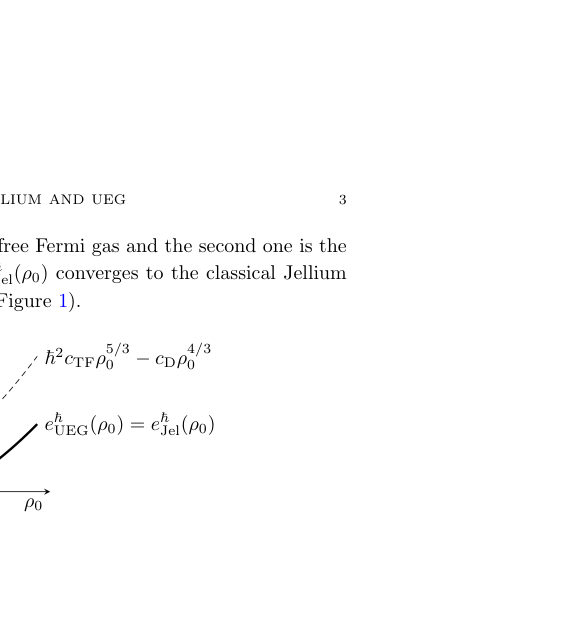
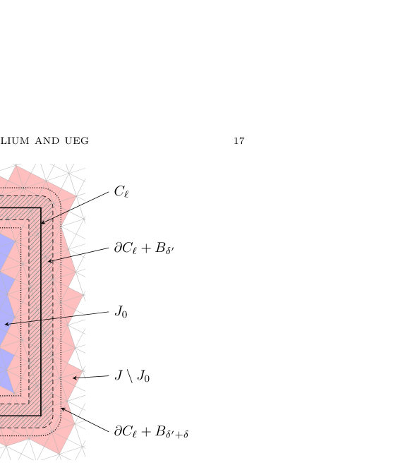
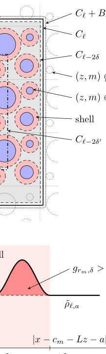
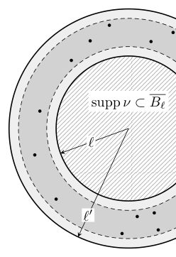
Summary. This paper proves the mathematical equality between the ground-state energy of the Jellium model and the Uniform Electron Gas (UEG) model for interacting electrons. By establishing two opposing inequalities, the authors confirm that the energy calculated using a background potential matches the energy calculated using a pure density functional approach. This is a major theoretical result confirming consistency across different models of electron correlation.
Why it may be interesting. This work provides a rigorous mathematical confirmation of a fundamental physical identity in condensed matter theory, linking two seemingly distinct theoretical models of electron interactions.
Main problem. The paper aims to rigorously prove the equality between the ground-state energy per unit volume calculated for the Jellium model and the Uniform Electron Gas (UEG) model in the quantum mechanical limit.
Main result. The core result is the mathematical proof that the ground-state energy per unit volume for Jellium, $e\hbar_{ ext{Jel}}( ho_0)$, exactly equals the energy for the UEG, $e\hbar_{ ext{UEG}}( ho_0)$.
Method. The proof strategy involves establishing two inequalities ($e_{ ext{Jel}} \le e_{ ext{UEG}}$ and $e_{ ext{UEG}} \le e_{ ext{Jel}}$) by comparing energy functionals derived from different physical definitions (canonical vs. grand-canonical).
Model / system. The study concerns interacting electrons modeled by two systems: Jellium (electrons in a uniform neutralizing background) and the UEG (electrons with constant density and no background). The Hamiltonian involves kinetic energy and electron-electron/electron-background interactions.
Key observables. Ground-state energy per unit volume ($e\hbar_{ ext{Jel}}( ho_0)$ and $e\hbar_{ ext{UEG}}( ho_0)$), and the energy functional $J$.
Important parameters / regimes. Electron density ($ ho_0$), and the quantum parameter $\hbar$.
Assumptions / limitations. The Jellium energy uses a thermodynamic limit with specific 'LN-admissible' boundary conditions, while the UEG energy uses a grand-canonical approach with density smoothing.
Figures summary. Figure 1 sketches the equality of the two energy functions versus density. Figure 2 illustrates the boundary layers used in the admissibility conditions for the Jellium model.
Paper structure. The paper builds the proof by first establishing the necessary mathematical frameworks for both energy definitions, then proving the two required inequalities ($e_{ ext{Jel}} \le e_{ ext{UEG}}$ and $e_{ ext{UEG}} \le e_{ ext{Jel}}$) through detailed energy bounding and construction arguments.
Jellium, a system of electrons in a uniform neutralizing background, and the uniform electron gas (UEG), a system of electrons with constant density and no background, are two standard models of the electron gas. We prove that the ground-state energy per unit volume of Jellium, as defined by Lieb and Narnhofer, coincides with the UEG energy defined by Lewin, Lieb and Seiringer, i.e. \[ e^\hbar_{\rm Jel}(ρ_0)=e^\hbar_{\rm UEG}(ρ_0). \] This equality was previously established in the classical case by Lewin, Lieb and Seiringer and independently by Cotar and Petrache.
Authors: Xin Li, Yinan Li
Type: theory · Category: quantum information and computing · PDF: https://arxiv.org/pdf/2610.21071v1
Analysis basis: full PDF text, analyzed in chunks
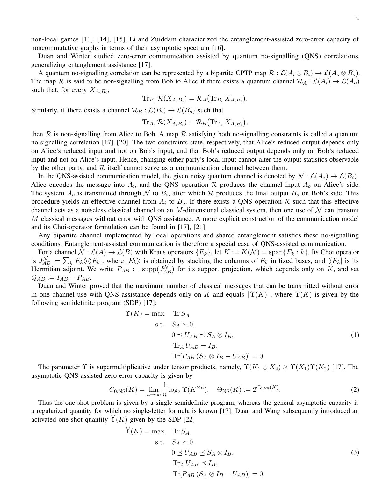
Summary. This paper develops a novel, tight semidefinite programming upper bound, $\Gamma(K)$, for the zero-error capacity of quantum channels using quantum no-signalling correlations. It rigorously proves the multiplicative nature of this bound and derives sharp quantitative estimates for the gap between the theoretical capacity and the achievable simulation rate, particularly for classical-quantum channels.
Why it may be interesting. This work provides rigorous, mathematically sharp bounds on fundamental resource quantities (capacity and simulation cost) in quantum information theory, which are crucial for understanding the limits of quantum communication protocols.
Main problem. The paper studies the zero-error communication and exact simulation rates for quantum channels assisted by quantum no-signalling (QNS) correlations.
Main result. It derives a tight, exactly multiplicative semidefinite programming (SDP) upper bound, $\Gamma(K)$, for the QNS-assisted zero-error capacity, and establishes a sharp bound on the gap between the operational simulation cost and the theoretical capacity.
Method. The primary method involves formulating capacity measures using Semidefinite Programming (SDP) and proving the multiplicative properties of the resulting bounds through tensor product analysis.
Model / system. The analysis focuses on general quantum channels characterized by their Kraus operator space $K$, with specific detailed results derived for the case of classical-quantum channels.
Key observables. Asymptotic QNS-assisted zero-error capacity ($C_{0,NS}(K)$), the SDP upper bound ($\Gamma(K)$), and the operational simulation cost ($S_{0,NS}(K)$).
Important parameters / regimes. Effective output dimension ($r$) and the minimum rank of the output support projections ($k$).
Assumptions / limitations. The analysis relies on the existence of strong duality for the SDP formulations and assumes finite-dimensional complex Hilbert spaces.
Figures summary. Not specified.
Paper structure. The paper introduces the core problem, defines the SDP bound $\Gamma(K)$ and proves its multiplicative property. It then compares $\Gamma(K)$ to other known bounds ($\Theta_{NS}(K)$, $\Sigma_{-}(K)$) and finally derives sharp bounds for the classical-quantum case, quantifying the gap between simulation and capacity.
We study zero-error communication and exact simulation of quantum channels assisted by quantum no-signalling correlations. For a channel with Kraus operator space $K$, we introduce a semidefinite programming parameter $Γ(K)$ that is exactly multiplicative under tensor products and upper-bounds $Θ_{\rm NS}(K)$, where $\log_2Θ_{\rm NS}(K)=C_{0,\rm NS}(K)$ and $C_{0,\rm NS}(K)$ denotes the asymptotic quantum no-signalling-assisted zero-error capacity. Among known upper bounds on $Θ_{\rm NS}$ given by semidefinite programs, $Γ$ is the tightest. We also prove that the previously introduced simulation lower bound $Σ^{-}(K)$ is exactly multiplicative and satisfies $Θ_{\rm NS}(K)\leqΓ(K)\leqΣ^{-}(K)\leqΓ(K)^2$. Using this multiplicativity, we show that neither $S_{0,\rm NS}(K)=\log_2Σ^{-}(K)$ nor its regularized extension $S_{0,\rm NS}(K)=\lim\nolimits_{n\to\infty}n^{-1}\log_2Σ^{-}(K^{\otimes n})$ holds in general. This answers an open question about the asymptotic simulation cost $S_{0,\rm NS}(K)$. For classical-quantum channels, we obtain sharp bounds. If $r$ is the effective output dimension, then $Θ_{\rm NS}\leqΓ\leq(1+r^{1/2})Θ_{\rm NS}/2$ and $Γ\leqΣ^{-}\leq(1+r^{1/2})Γ/2$. If $k$ is the minimum rank of the output support projections, then $Σ^{-}/Θ_{\rm NS}\leq[(1+r^{1/2})/(1+k^{1/2})]^2$, and this bound is sharp for every $1\leq k\leq r$. Thus, we obtain the sharp bound $S_{0,\rm NS}-C_{0,\rm NS}\leq2\log_2[(1+r^{1/2})/(1+k^{1/2})]$.
Authors: Shiroman Prakash, K. L. Ramya
Type: theory · Category: quantum information and computing · PDF: https://arxiv.org/pdf/2610.21879v1
Analysis basis: full PDF text, analyzed in chunks
Summary. This work demonstrates that the fermion content of one Standard Model generation forms a quantum error-correcting code due to the mathematical constraint of anomaly cancellation. This code is identified as a specific triorthogonal $[[15, 1, 3]]_p$ code. The paper bridges particle physics (SO(10) GUTs) and quantum information theory by showing that fundamental symmetries dictate robust quantum encoding structures.
Why it may be interesting. The paper provides a concrete, physical realization of a highly structured quantum code using fundamental particle physics symmetries, linking high-energy theory directly to quantum information theory.
Main problem. The paper establishes a deep connection between the anomaly cancellation conditions in the Standard Model and the mathematical structure required for a quantum error-correcting code.
Main result. The fermions of one Standard Model generation, when combined with a right-handed neutrino, form a triorthogonal quantum error-correcting code, specifically a $[[15, 1, 3]]_p$ code.
Method. The authors use lattice theory and the mathematical requirement of vanishing cubic anomalies (a defining property of triorthogonal codes) to prove the code structure.
Model / system. The system is the Standard Model fermions embedded within an SO(10) grand unification framework. The code is constructed using the charge structure of these fermions, treating them as qudits.
Key observables. Code parameters like length ($n=15$), distance ($d=3$), and the existence of logical operators derived from anomaly cancellation.
Important parameters / regimes. The prime modulus $p$ (especially $p=2$ and $p \ge 5$), and the structure of the SO(10) symmetry group.
Assumptions / limitations. The analysis relies on the $SO(10)$ embedding and the assumption that anomaly cancellation dictates the code structure. Special care is taken for $p=2$.
Figures summary. Figure 1 illustrates the fifteen-qudit code as a doubled structure, linking the right-handed fields and the logical qudit. Tables summarize code structure, stabilizers, and distillation performance.
Paper structure. The paper proceeds by first establishing the mathematical equivalence between anomaly cancellation and triorthogonal codes. It then constructs the code using the Standard Model charges, deriving the $[[15, 1, 3]]_p$ parameters. Finally, it analyzes the code's properties, including its relationship to other known codes and its performance in quantum state distillation.
Together with a right-handed neutrino, the fermions of one generation of the Standard Model are labelled by five bits, a combinatorial structure tied to anomaly cancellation. We make this precise. Anomaly cancellation is the vanishing of a cubic form, the defining property of triorthogonal codes, the quantum error-correcting codes behind magic state distillation. Removing the right-handed neutrino gives a $[[15,1,3]]_p$ code for every prime $p$, including the Bravyi-Kitaev code for $p = 2$. For qutrits it is the unique shortest distance-three triorthogonal code.
Authors: Shashank Shekhar, David Elkouss, Siddhartha Santra
Type: theory · Category: quantum information and computing · PDF: https://arxiv.org/pdf/2610.21420v1
Analysis basis: full PDF text, analyzed in chunks
Summary. This work presents a general operational framework to systematically optimize the distribution of multipartite entanglement in quantum networks. By classifying networking operations into inflation, deflation, and purification primitives, the authors provide systematic bounds and protocols for quantum repeaters. This advances the field by offering a comprehensive tool for resource-efficient GME distribution.
Why it may be interesting. The systematic classification of entanglement manipulation primitives (inflation, deflation, purification) provides a powerful, general tool for analyzing resource constraints in quantum network design, which is highly relevant to quantum information theory.
Main problem. The paper addresses the challenge of optimizing the distribution of long-range Genuine Multipartite Entanglement (GME) on demand within quantum networks.
Main result. A general operational framework based on three primitives (inflation, deflation, purification) allows for the systematic optimization of multipartite quantum repeater protocols, showing that postselection can enhance entanglement beyond initial resource bounds.
Method. The authors develop a theoretical framework by classifying networking operations into inflation, deflation, and purification primitives, and applying this to analyze specific quantum repeater protocols.
Model / system. The system is modeled as a quantum network represented by a hypergraph, utilizing multipartite entangled states, specifically Dür-Cirac-Tarrach (DCT) states, as resources.
Key observables. Genuine Multipartite Concurrence (GMC), Localizable Multipartite Entanglement (LE), and fidelity.
Important parameters / regimes. Network architecture, target-node set, and resource budget.
Assumptions / limitations. Local operations are restricted to Stochastic Local Operations and Classical Communication (SLOCC).
Figures summary. Figures schematically represent the hypergraph network structure and compare the average output GMC of two different quantum repeater protocols (E1-M-QR vs. E2-M-QR) under various conditions, including postselection.
Paper structure. The paper introduces the operational framework by defining the three primitives (inflation, deflation, purification), derives bounds for GMC under these operations, and then applies this framework to compare and optimize specific multipartite quantum repeater protocols using DCT states.
Long-range, genuine multipartite entanglement (GME) between distant parties in a quantum network is a crucial resource for distributed quantum information processing. Through controlled manipulation of short-range GME states in the network via stochastic local operations aided by classical communication (SLOCC), long-range GME can be established between selected target nodes on demand. Optimizing such multipartite entanglement distribution protocols under constraints imposed by the network architecture, target-node set, and available resource budget is a key challenge in resource-efficient manipulation of GME. We present a general operational framework for manipulating GME in quantum networks by classifying the relevant networking operations into three broad primitives-inflation, deflation, and purification-reflecting their effect on the proliferation of GME through general bounds and illustrative examples. We show how these primitives can be combined to construct a broad class of multipartite quantum repeater protocols, enabling their systematic optimization, and demonstrate the framework with a simple example. Applying our approach to networks of Dür-Cirac-Tarrach states reveals a rich landscape of achievable end-to-end GME and accessible entanglement classes. More generally, our framework provides a systematic approach to the construction and optimization of multipartite quantum repeater protocols for scalable and resource-efficient GME distribution in quantum networks.
Authors: Rahul Jain
Type: theory · Category: quantum information and computing · PDF: https://arxiv.org/pdf/2610.21410v1
Analysis basis: full PDF text, analyzed in chunks
Summary. This paper develops a quantum information-theoretic tool, the quantum conditional relative entropy, to analyze entanglement in repeated quantum games. It successfully proves a cubic parallel-repetition bound and a threshold bound for these games. The work advances the understanding of quantum correlation detection by providing a powerful, generalizable charge that overcomes limitations of previous methods.
Why it may be interesting. While focused on quantum games, the development of novel information-theoretic charges (like the quantum conditional relative entropy) and the techniques for bounding resource consumption in repeated quantum processes are foundational tools applicable to analyzing quantum correlations in complex many-body systems or open quantum systems.
Main problem. The paper aims to establish rigorous bounds for the parallel repetition of entangled quantum games, specifically deriving a cubic bound and a threshold bound.
Main result. It proves that the $n$-fold repeated value of an entangled game decays exponentially as $\exp[-\Omega(\varepsilon^3 n/L)]$, and establishes a threshold bound for winning a fraction of coordinates.
Method. The core method involves utilizing the quantum conditional relative entropy as a novel information-theoretic charge to quantify entanglement and bound the success probability over repeated trials.
Model / system. The model is a finite two-player entangled game defined by a question law $\mu$ and answer alphabets $\mathcal{A}, \mathcal{B}$. The analysis considers the repeated application of this game structure.
Key observables. The entangled value $\omega^*(G)$, the quantum conditional relative entropy (the charge), and the probability of winning a certain fraction of coordinates.
Important parameters / regimes. The gap parameter $\varepsilon = 1 - \omega^*(G)$, the size parameter $L = \max\{1, \log(|\mathcal{A}||\mathcal{B}|)\}$, and the error tolerance $\delta$.
Assumptions / limitations. The method relies on constructing and analyzing 'conditional comparison states' and converting their relative entropies into local pure-state descriptions.
Paper structure. The paper develops the quantum conditional relative entropy charge, applies it to bound the total charge over multiple coordinates, and finally uses this charge to derive the exponential decay bounds for both all-win and threshold parallel repetitions.
We give a proof of the cubic parallel-repetition bound for finite two-player entangled games using quantum conditional relative entropy. For a game with entangled value $1-\varepsilon<1$ and answer alphabets $\mathcal A,\mathcal B$, its $n$-fold repeated value is at most \[ \exp[-Ω(\varepsilon^3n/L)],\qquad L:=\max\{1,\log(|\mathcal A||\mathcal B|)\}, \] for every $n\ge1$. This recovers Song's cubic rate. We also prove a threshold bound: the probability of winning a fraction at least $1-\varepsilon+δ$ is at most $\exp[-Ω(δ^5n/(\varepsilon^2L))]$ for $0<δ\le\varepsilon$. Our information charge is the decrease in relative entropy when a question reference is discarded. Our comparison states preserve the original conditional question law. A chain rule bounds the coordinate charges using the cost of conditioning on checked wins and retaining checked answers. Our main lemma converts small charges into nearby pure-state descriptions and local corrections, each depending only on one player's question. Together with Song's sampler, these enable approximate local preparation of the conditioned workspace.
Authors: Nitin Jha, Prateek Paudel, Abhishek Parakh
Type: theory · Category: quantum information and computing · PDF: https://arxiv.org/pdf/2610.20987v1
Analysis basis: full PDF text, analyzed in chunks
Summary. This paper presents a theoretical framework for operating quantum communication channels alongside classical data streams over shared optical fiber. It models complex noise sources like Raman scattering and XPM to derive a combined 'entanglement-fidelity yield' bound. The results are crucial for network design, as they show that the optimal operating wavelength depends critically on whether the system is limited by quantum fidelity or classical transmission yield.
Why it may be interesting. It provides quantitative, physics-based guidelines for integrating quantum communication into existing, noisy classical infrastructure, which is a major engineering challenge in quantum networking.
Main problem. The paper develops a framework to manage quantum communication in networks that must share optical fiber with high-power classical data traffic.
Main result. The analysis distinguishes between constraints on logical fidelity and block acceptance, showing that the optimal operating wavelength shifts depending on whether fidelity or yield is the limiting factor.
Method. The authors derive a wavelength-selection framework by modeling various optical impairments (Raman scattering, FWM, XPM) and maximizing an 'entanglement-fidelity yield' bound.
Model / system. The system is a quantum-augmented network using a three-stage, error-corrected quantum communication protocol over shared optical fiber, analyzed under a thermal-background model.
Key observables. Logical entanglement fidelity, block acceptance probability, and the combined entanglement-fidelity yield.
Important parameters / regimes. Wavelengths (e.g., 1537 nm vs 1551 nm), classical link budget (e.g., 1.25 Gb/s), and traversal distance (e.g., 10 km).
Assumptions / limitations. Assumes an ideal one-photon receiver, ideal recovery, and models impairments using a thermal-background approach.
Figures summary. Figures illustrate the optimized yield bound and selected wavelength as a function of distance and launch power, highlighting the distinct operating regions defined by fidelity versus yield constraints.
Paper structure. The paper systematically models the physical impairments from classical channels (Raman, FWM, XPM) affecting the quantum channel, derives the resulting qubit channel, and then maximizes the entanglement-fidelity yield over candidate wavelengths subject to classical link budget constraints.
In a quantum augmented network, sharing optical fiber with classical traffic requires quantum wavelength selection to balance logical fidelity, block acceptance, and classical data reception. Here we develop a wavelength-selection framework for an error-corrected three-stage quantum communication protocol. Under a thermal-background model with independent errors, an ideal one-photon receiver, and ideal recovery, we derive an accepted qubit channel and a key-independent lower bound on logical entanglement fidelity. Combining this bound with block acceptance gives an entanglement-fidelity yield bound, which we maximize over evaluated wavelengths subject to fidelity and classical link-budget requirements. For the Steane [[7,1,3]] code at 5 km per traversal and -10 dBm per classical channel, the largest fidelity certificate occurs near 1537 nm, whereas the largest yield bound occurs near 1551 nm. Along the 1.25 Gb/s classical link budget with 0.2% base error, the optimized yield bound falls below 10^-6 near 10 km per traversal, while fidelity remains certified at 0.99 or higher at longer spans. These results distinguish fidelity and yield constraints and identify certified operating regions for quantum-augmented networks sharing optical fiber.
Authors: Vikas Chahar, Shivam Rathod, Lankun Wang, Sneh, Shubhadeep Bej, Divya Prakash Dubey, Dinesh Dixit, Abdelmoneim Elkhouly, Raúl Cardoso-Gil, Zihang Liu, Xiao Xu, Rie Y. Umetsu, Ratnamala Chatterjee, Kaustuv Manna
Type: both · Category: other · PDF: https://arxiv.org/pdf/2610.22253v1
Analysis basis: full PDF text, analyzed in chunks
Summary. This paper demonstrates that partially substituting Ni with Pt in the half-Heusler alloy YNiBi creates a semimetallic material with superior thermoelectric performance. By simultaneously tuning electronic and thermal properties, the alloying approach offers an effective pathway for developing high-performance thermoelectric materials.
Why it may be interesting. While focused on solid-state thermoelectrics, the concept of tuning electronic band structure (closing the gap) via chemical substitution is relevant to engineering quantum materials for enhanced transport phenomena.
Main problem. The study investigates how substituting Ni with Pt in the half-Heusler alloy YNiBi tunes its electronic, magnetotransport, and thermoelectric properties.
Main result. Pt alloying drives the material toward semimetallic transport, significantly enhancing the Seebeck coefficient and achieving a figure of merit ($zT$) of 0.13 at room temperature.
Method. The research combines experimental measurements (magnetotransport, thermoelectric characterization) with first-principles calculations (DFT) to analyze the electronic structure.
Model / system. The physical system is the half-Heusler alloy $ ext{YNi}{0.5} ext{Pt}$, which is synthesized via spark-plasma-sintering. Theoretical analysis uses DFT to model band structure changes.} ext{Bi
Key observables. Seebeck coefficient, thermal conductivity ($\kappa$), power factor ($ ext{PF}$), figure of merit ($zT$), magnetoresistance ($ ext{MR}$), and electronic band gap.
Important parameters / regimes. Room temperature (300 K), applied magnetic field (14 T), and the alloying ratio ($ ext{Ni}/ ext{Pt}$).
Assumptions / limitations. The analysis relies on single-parabolic-band approximations and the use of established transport models like the Wiedemann-Franz law.
Figures summary. Not specified, but the paper analyzes multiple transport properties (Resistivity vs. T, MR vs. B, S vs. T) and compares results to theoretical predictions.
Paper structure. The paper follows a structure of synthesis/characterization, detailed measurement of transport properties (electrical, thermal, magnetic), and theoretical confirmation of the electronic structure changes.
Half-Heusler alloys provide a versatile platform for tuning electronic and thermal transport through chemical substitution. Here, we investigate the thermoelectric and magnetotransport properties of spark-plasma-sintered YNi_{0.5}Pt_{0.5}Bi. Partial substitution of Ni by Pt drives YNiBi toward semimetallic transport, characterized by hole-dominated conduction, a low Hall carrier concentration of $\mathrm{1.9 \times 10^{19} cm^{-3}}$, and a sizeable nonsaturating magnetoresistance of 18$\%$ at 300 K under 14 T. Compared with YNiBi, Pt alloying increases the room-temperature Seebeck coefficient from approximately 90 to 130 $\mathrm{μV K^{-1}}$, while reducing the thermal conductivity to 3.15 $\mathrm{W m^{-1} K^{-1}}$. Single-parabolic-band analysis indicates an enhanced carrier effective mass, resulting in a room-temperature power factor of 13.7 $\mathrm{μW cm^{-1} K^{-2}}$ and a figure of merit ($zT$= 0.13). First-principles calculations further show a Pt-induced closing of the electronic band gap and a low density of states near the Fermi level, consistent with the experimentally observed semimetal-like transport. These results demonstrate that Ni/Pt alloying provides an effective route for simultaneously tuning the electronic, magnetotransport, and thermoelectric properties of YNiBi-based half-Heusler compounds.
← Index · ← Previous · Next →